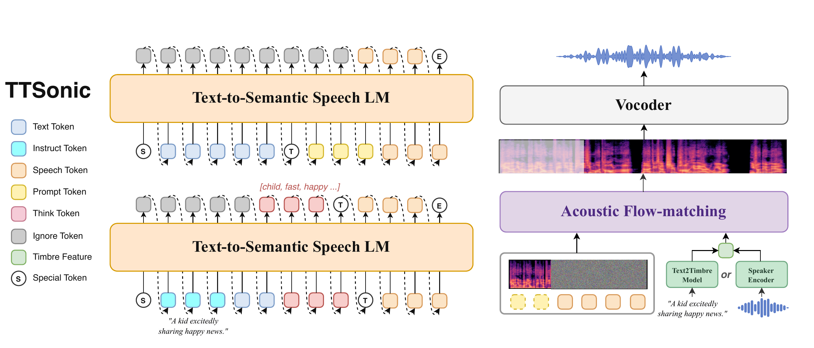
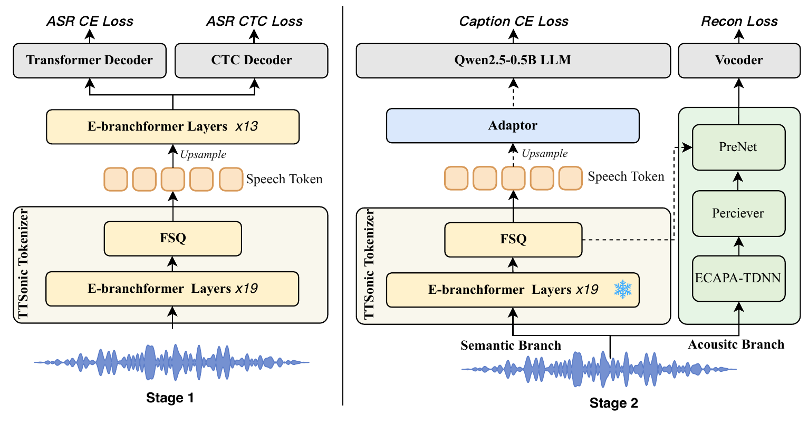

Technical Report Demo
TTSonic
A unified speech generation model that disentangles semantic and prosodic speech tokens from speaker timbre embeddings.
Paper
Abstract
Modern text-to-speech (TTS) systems can synthesize natural and expressive speech, yet a practical speech foundation model must go beyond naturalness to offer stable quality, precise controllability, and a broad set of composable capabilities within a single framework.
We present TTSonic, a unified speech generation model that supports zero-shot TTS, voice cloning, prosody cloning, controllable cloning, text-guided voice design, and voice conversion within a single framework. TTSonic couples a semantic speech tokenizer, a text-to-semantic autoregressive language model, and an acoustic flow-matching model.
The tokenizer is trained with ASR supervision and a late FSQ bottleneck so that its discrete tokens preserve semantic and prosodic information while being disentangled from speaker timbre; the language model then performs semantic and prosodic planning from text and optional natural-language instructions, and the flow-matching model renders speech conditioned on either reference audio or a text-described timbre.
Building on this design, we further improve robustness, controllability, and voice diversity through RL post-training tailored to TTS and instruction following, chain-of-thought-guided style planning, and Text2Timbre voice design. Experiments show that TTSonic achieves state-of-the-art or competitive TTS and instruction-following performance with a compact 0.5B backbone, and obtains further gains from model scaling and post-training.
Architecture
Method Overview


Speech Enhancement
Reconstruct clean, intelligible speech from codec tokens while filtering background noise, reverberation, and other acoustic degradations.
Voice Conversion
Transfer the target speaker's timbre while preserving the source speech content.
Voice Cloning
Generate new speech from a reference prompt and text while preserving the reference speaker's voice.
Prosody Cloning
Clone the prosody of the Prompt audio and express it with the Target Voice timbre.
Instruction Following
Follow natural-language instructions for speaker traits, speaking style, emotion, and prosody.
Long-form Instruction Following
Maintain instruction adherence, speaker consistency, and expressive prosody throughout long-form narration.
All texts and instructions used in this section were generated by a large language model.
Disclaimer
The content provided above is for academic purposes only and is intended to demonstrate technical capabilities. Some examples are sourced from the internet. If any content infringes on your rights, please contact us to request its removal.